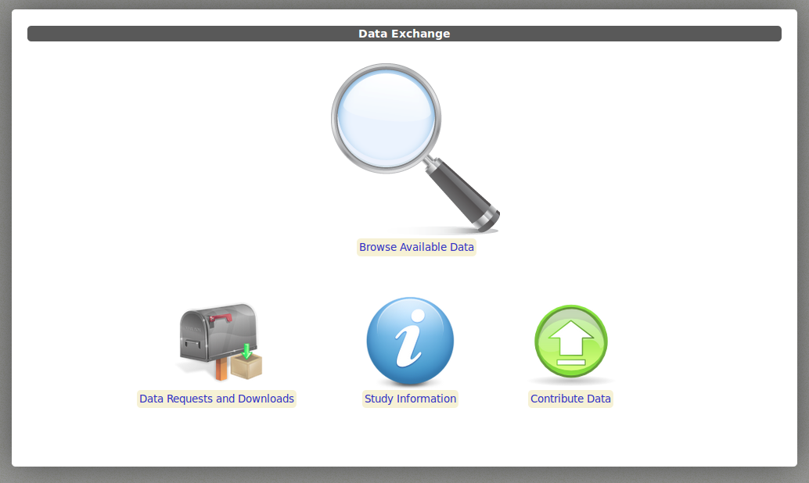

Accessing the Full Phenotypic NKI-RS Releases¶
Data Usage Agreement¶
As stated in the data access overview, the full phenotypic releases of the Enhanced NKI-RS Sample require a data usage agreement – a requirement similar to efforts such as the Alzheimer’s Disease Neuroimaging Initiative (ADNI) and the National Database for Autism Research (NDAR). The adoption of a data usage agreement is not intended to limit the specific analyses a researcher can perform; users will only need to specify the broad range of analyses they may pursue with the data (e.g., association studies between DTI, R-fMRI, and behavior), not a specific analysis or set of analyses. The intent of the agreement is to ensure that data users agree to protect participant confidentiality when handling data that contains potentially identifying information and that they will agree to take the necessary measures to prevent breaches of privacy. The specific agreement to be employed for the Enhanced NKI-RS are those previously defined by the New York State Office of Mental Health, and can be found in the Data Usage Agreement (DUA).
Unlike the NDAR agreement, institutional review board (IRB) approval is not required for transfer of the data; it will be up to the individual data user to satisfy any additional requirements specified by their local IRB or ethics committee, prior to using the NKI-RS. Given that local IRB approval is not required as part of an individuals application for access to the NKI-RS, there is no need for an individual’s IRB to have a federal-wise assurance number – which can limit recipients of the NDAR datasets.
For your convenience, the DUA is already completed in its entirety with NKI-approved text for data handling. Investigators simply need to:
- Download the DUA form.
- Review all contents.
- Provide appropriate information regarding their name(s) and institution.
- Have the document signed and notarized by the appropriate institutional representative.
- Scan and send us the document.
- When your application has been received and approved, you will receive an email confirming your ability to request all phenotypic (single-item and summary) and imaging data in the Collaborative Informatics and Neuroimaging Suite (COINS) Database (see description below).
Note: If your institution requests any clarifications regarding the DUA, just contact us and let us know – we are happy to work with them and are developing a Frequently Asked Questions page as questions occur.
COINS Database Overview¶
All of the full phenotypic NKI-RS data releases are accessible via the Collaborative Informatics and Neuroimaging Suite (COINS; Scott et al., 2011). COINS was selected to provide the primary infrastructure for data capture for the NKI-RS, removing traditional paper and pencil approaches and integrating phenotypic and imaging data. COINS, developed by the Mind Research Network, was created to facilitate communication and cultivate a data-sharing community by providing researchers with an open source information system that includes web-based tools to manage studies, subjects, imaging, and phenotypic data. This suite of tools has an intuitive ease of use and offers versatile data upload/import/entry options, rapid and secure sharing of data among investigators, querying of data types and assessments, real-time reporting, and study-management tools. Among its many features, the web-based assessments, automated data scoring, and integrated management of phenotypic and imaging data are potentially the most attractive. Web-based assessment entry completed by participants and research staff increases efficiency and accuracy by eliminating the need for intermediate data entry (i.e., paper to computer). Equally important, individual item-level responses are coded in the database, providing researchers with a far richer phenotypic dataset for exploration. In addition, protected health information can be unlinked within COINS to facilitate data sharing while maximally protecting participant anonymity. Of note, COINS is in compliance with Health Insurance Portability and Accountability Act (HIPAA) standards and implementation rules.
Requesting Data in COINS¶
To request data from a full phenotypic release using the COINS interface:
- Navigate to the COINS Data Exchange.
- Enter your e-mail address, type a password twice for the account in the lower right box, and click Get Account if you are new to COINS. Otherwise log in as you normally would.
- From the Data Exchange menu at the top, select Browse Available Data.
- When you are ready, drag an AND Data Group onto the Request Workspace. Into the AND group, drag a Studies data filter. Click Study Name and select NKI-RSI, and click apply. This will ensure you request data from the NKI-RS study (it may take up to 6-12 hours for our team to approve your one-time data access request). You may now add MR or Assessments filters to the AND group to request specific images and assessments. It is also possible to filter by subject characteristics.
Below is a video tutorial describing how to use the COINS Data Exchange in more detail:
Interpreting Data Downloaded from COINS¶
Once you are able to access COINS, you will be able to readily download assessment data. To intrepret this data, you will need to download various codebooks that describe the meaning of the column names in the pulled data in greater detail. To download these codebooks, perform the following steps:
- Navigate to the main screen of the COINS data exchange. It should appear as follows:

- Click on Study Information.
- Under Select a Study, navigate to NKI-RSI. There will now be several documents you may download in the box on the right.

Below is a short description of each item:
- BIRD.pdf - A description of the variables collected in the BIRD assessment.
- DS CODEBOOK.csv - A comprehensive document containing labels for individual assessment item ID codes obtained in the Rockland sample studies, as well as labels for assessment data itself.
- NKI_RS_Enhanced_DKEFS_datadictionary8_6_2014.xls - Labels for the DKEFS measure codes.
- PennCNB_Test_Descriptions_NKLINE.pdf - Descriptions of the measures acquired in the Penn CNB.
- RAVLT data dictionary_4_27_2016.xlsx - Descriptions of the measures acquired in the Rey Auditory Verbal Learning Test.
- Relationships.csv - An identity matrix multiplied by 1000.

Table Of Contents
An open neuroscience project brought to you by: